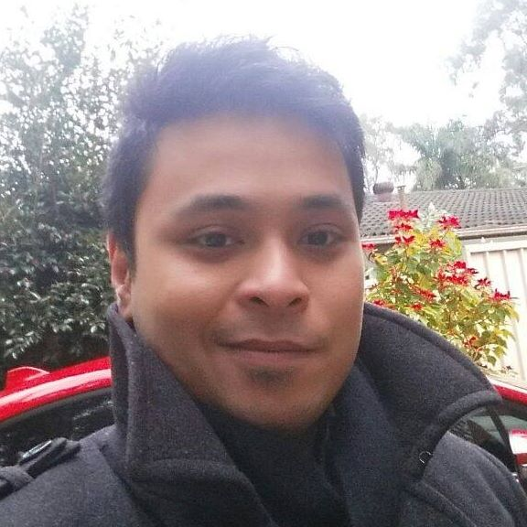

Sydney, Australia
IT professional by day. Author of dark fantasy by night. Externally logical, internally emotional — and apparently that's a whole thing.

About
I was born in the Philippines and moved to Sydney when I was eight. That was a long time ago now — Sydney is home.
Growing up, I was obsessed with video games. That obsession quietly turned into a genuine love for technology, which eventually became a 13-year career in IT service delivery — building service desks, owning SLAs, leading teams, and working through the kind of operational complexity that most people would rather not touch.
Outside of work I'm into anime, and I collect and paint Warhammer 40K — Grey Knights, a custom chapter I call The Grey Ravens. I don't play competitively, just with friends and family. It's supposed to be fun.
I've also been having the same vivid dreams since my late teens. A world, characters, a story that kept building itself in my sleep. Eventually I decided to stop ignoring it and write it down. That became Ytecat.
What I Do
13 years across MSP, enterprise and managed services. Built service desks from scratch, owned SLAs end to end, led teams through significant operational change. Currently building an in-house MSP desk at Conekt Australia.
View full CV →A dark fantasy series set in a world 83% occupied by demons, following a group of misfits learning the quietly dangerous act of trusting each other. Born from over a decade of recurring dreams.
Discover the world →Currently